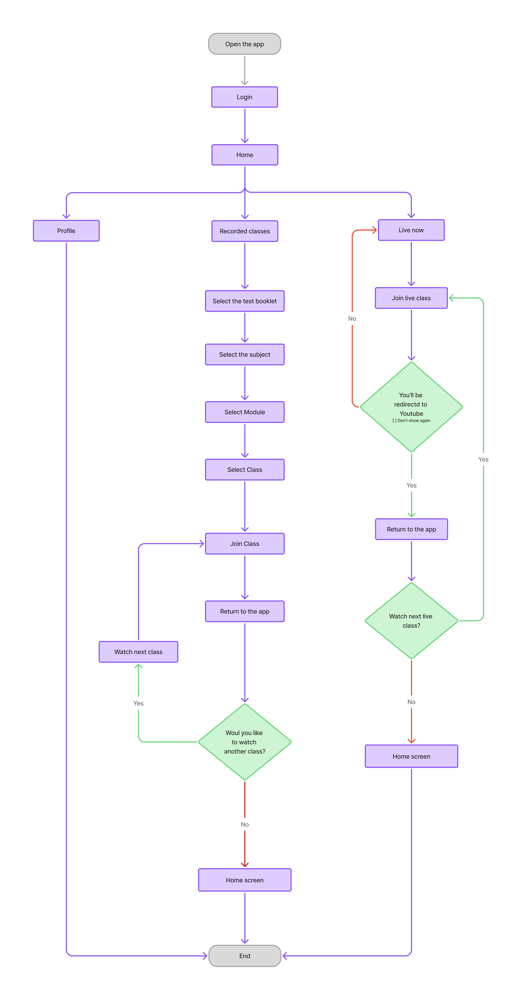
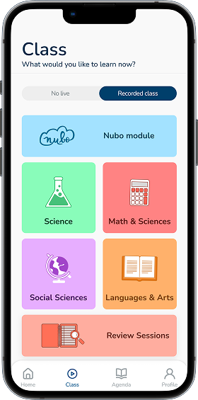
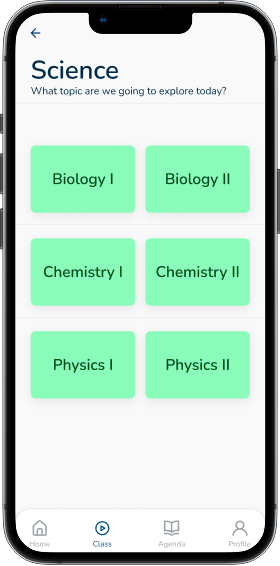
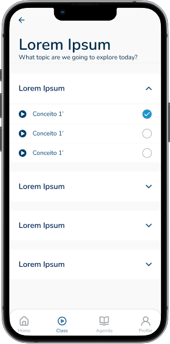
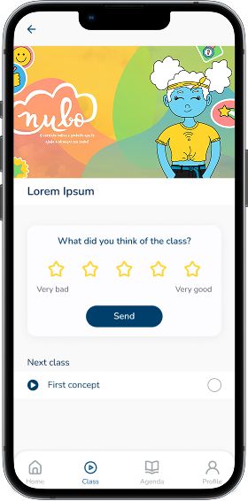
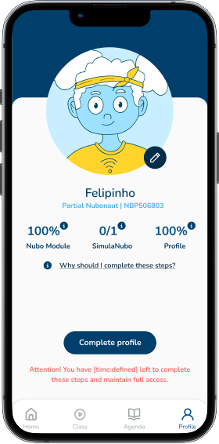
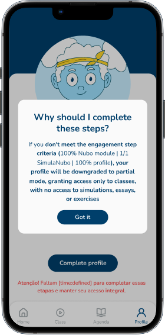
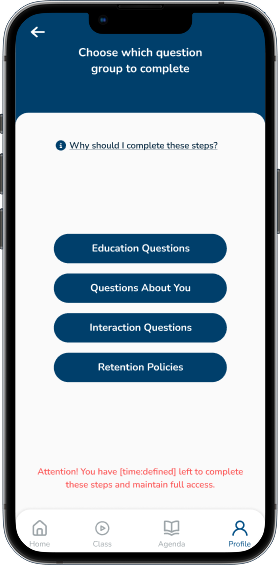
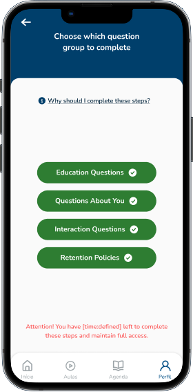

Redesigning the Nubo App
A complete redesign of two key flows — Home and Profile — to reduce friction and help students preparing for Brazil’s entrance exams join classes faster.

Context
Nubo is an app for high-school students preparing for ENEM and other entrance exams. The product existed, but its structure didn’t match how students navigated or consumed content. Students are often stressed and in a hurry — the product needed to respect that mindset.
Persona

To humanize our design process, we used Helena as our main persona. She is a senior high school student who works part-time and studies for the ENEM exam. Her days are packed, so she values speed, clarity, and simplicity in digital products.
- Objectives: quickly find and join live classes, stay organized with minimal effort, keep motivation high.
- Pain Points: confusing navigation, lack of visibility on live content, abrupt redirections to external tools.
Helena’s needs guided the redesign of the Home and Profile screens, ensuring that the app felt less bureaucratic and more supportive of her study routine.
Problem
The Home and Profile screens made the critical task — joining a live class — unnecessarily difficult. Students had no clear visibility of what was live, no intuitive schedule, and were abruptly redirected to external tools. Leadership reported ~90% abandonment during the year, ending with only ~16 active students in 2024.
Problem Analysis & Strategy
With only one week, we focused on removing friction. I facilitated alignment between product, design, and engineering, making trade-offs to deliver a smaller scope with higher quality.
We had to postpone the Agenda feature (deadlines, simulados, essays) despite having mid-fi wireframes. Instead, we prioritized: clear “Live now” entry, simpler navigation, and predictable external redirects.

User Flow
Before moving to visual design, we mapped how students would navigate through the new experience — from the Home screen to joining a class and completing their profile. This visualization clarified priorities and ensured no critical step was missed.

The simplified flow highlights fewer entry points, faster paths to live content, and seamless transitions between academic and personal areas of the app.
Explorations & Wireframes
Even within a one-week deadline, I created mid-fidelity wireframes to explore different layouts. Some explorations were implemented, others were postponed (like the Agenda). These explorations helped clarify priorities.


Design Solutions
We focused on simplifying two critical screens:
Home
- Live-first layout — “Currently Happening” at the top.
- Upcoming Broadcasts list for the day.
- Redirect confirmation modal before leaving to Google Meet/YouTube.

Lessons Flow
The redesigned Lessons screens were crucial to helping students access live and recorded content faster. Previously, the experience was fragmented — categories, videos, and lives were scattered or hidden behind menus. The new structure brought clarity, hierarchy, and motivation through a clean, colorful interface.




- Six clear categories: Naturezas, Linguagens, Humanas, Exatas, Redação, and Nubo Module.
- Color-coded cards: each subject uses a vivid color to make navigation immediate and memorable.
- Progressive disclosure: students first see subject overview, then classes within, and finally details like video, notes, and duration.
- Motivational design: simplified navigation to reduce fatigue and support consistency in study habits.
Profile
- Display of student name, RA, and enrollment status.
- Clear Full-time vs Part-time distinction.
- Simple photo upload flow (camera, gallery, or mascot avatar).


Complete Your Profile Flow
During onboarding and early use, many students left their profiles incomplete — missing photos, RA, or study mode — which caused issues in class identification and attendance tracking. This microflow was designed to be fast, friendly, and mobile-first, encouraging completion without friction.




- 3-step structure: personal info → profile photo → confirmation.
- Clear microcopy: supportive language like “Almost there!” and “You’re all set!” reinforces motivation.
- Visual feedback: progress indicator and check animations give a sense of completion.
- Integration: all data syncs directly with the student dashboard, eliminating future inconsistencies.
This improvement reduced support requests about profile data and increased completion rate by over 60% within the first week after release.
Results
- Zero confusion reports at launch.
- Students praised clarity and usability (testimonials below).
- Historic engagement decline reduced by ~45% after launch.

Learnings
- Balancing speed and quality under tight deadlines is key.
- Trade-offs are necessary to deliver high-value features on time.
- Clarity and simplicity always beat complexity.
My Role
I led UX/UI decision-making for this redesign. I collaborated with 2 other designers and engineering, making trade-offs to deliver a smaller scope with higher quality in one week. I produced mid-fi explorations, facilitated team alignment, and designed the final UI for Home and Profile, ensuring mobile-first usability and live-class accessibility.
Conclusion
This redesign wasn’t just UI polish — it was a focused effort to let students access what matters most: live classes, in less than 3 taps. By shipping a smaller but higher-quality scope, we built trust with students and leadership, and created a foundation for future improvements like the Agenda and teacher dashboards.